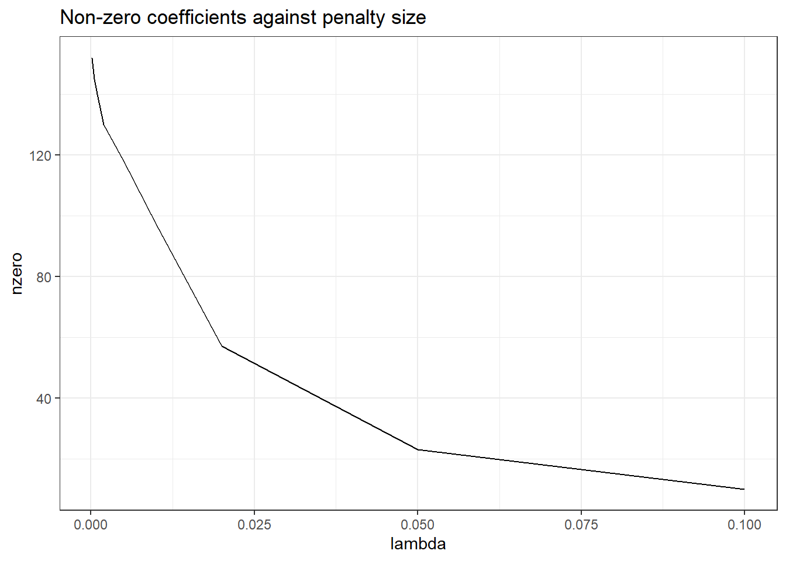

install.packages("tidytext")
install.packages("rsample")
install.packages("broom")
install.packages("stopwords")
library(tidytext)
library(rsample)
library(broom)
library(tidyverse)
library(glmnet)
set.seed(100)Text Analysis
Introduction
In this workshop we will carry out some text analysis.
I recommend typing each part of the example code below into an R script and running it, rather than copying and pasting. This help you internalise the process a little better and understand what is happening at each step.
Feel free to experiment and change bits of the code. This is the best way to learn.
Getting started
Begin by opening Rstudio and create a project for this workshop (or use one you have already created for this course).
See this brief discussion of how to go about this.
See also this article about ways of working with R and Rstudio.
We will need to install some additional packages for this exercise. We will need the tidyverse set of packages, glmnet and keras but hopefully these are already installed from previous workshops. We will also use the ‘tidytext’ package, for analysing text in a tidy manner, the ‘stopwords’ package, to give a list of the most common English words, and the rsample package, for easily dividing data between training and test samples.
Remember that you can always access the help for any R function if you need to by typing ? and the name of the function into the console.
?unnest_tokensReading text data
On the course blackboard page, you will find a zip file containing some bbc news datasets from the noughties.
This datasets is sourced from:
D. Greene and P. Cunningham. “Practical Solutions to the Problem of Diagonal Dominance in Kernel Document Clustering”, Proc. ICML 2006.
Download these files in a folder within your project named data.
The data is organised into five categories, each contained in separate subfolders.
# list all files and folders in the bbc directory
base_path <- "data/bbc"
categories <- list.files(base_path)
# exclude the readme file
categories <- categories[categories != "README.TXT"]
categories[1] "business" "entertainment" "politics" "sport"
[5] "tech" Within each subfolder, there are numbered text files each containing a separate individual article.
# (note paste0 just sticks character strings together)
# paste0("a", "bc") gives "abc" as an output
path_to_business <- paste0(base_path, "/", categories[1])
business_files <- list.files(path_to_business)
business_files[1:5][1] "001.txt" "002.txt" "003.txt" "004.txt" "005.txt"length(business_files)[1] 510We can write some code to read in these files, and store them in a character vector:
# at the moment we have the file names. We need the whole location (path) of the file to be able to read it in:
business_paths <- paste0(path_to_business, "/", business_files)
business_paths[1][1] "data/bbc/business/001.txt"# create an empty vector to store text in
bus_articles <- c()
# for every file in the list of business article files
for (bus_file in business_paths){
# read in the article
bus_article <- read_file(bus_file)
# add the article to the vector.
bus_articles <- c(bus_articles, bus_article)
}
length(bus_articles) [1] 510bus_articles[1][1] "Ad sales boost Time Warner profit\n\nQuarterly profits at US media giant TimeWarner jumped 76% to $1.13bn (£600m) for the three months to December, from $639m year-earlier.\n\nThe firm, which is now one of the biggest investors in Google, benefited from sales of high-speed internet connections and higher advert sales. TimeWarner said fourth quarter sales rose 2% to $11.1bn from $10.9bn. Its profits were buoyed by one-off gains which offset a profit dip at Warner Bros, and less users for AOL.\n\nTime Warner said on Friday that it now owns 8% of search-engine Google. But its own internet business, AOL, had has mixed fortunes. It lost 464,000 subscribers in the fourth quarter profits were lower than in the preceding three quarters. However, the company said AOL's underlying profit before exceptional items rose 8% on the back of stronger internet advertising revenues. It hopes to increase subscribers by offering the online service free to TimeWarner internet customers and will try to sign up AOL's existing customers for high-speed broadband. TimeWarner also has to restate 2000 and 2003 results following a probe by the US Securities Exchange Commission (SEC), which is close to concluding.\n\nTime Warner's fourth quarter profits were slightly better than analysts' expectations. But its film division saw profits slump 27% to $284m, helped by box-office flops Alexander and Catwoman, a sharp contrast to year-earlier, when the third and final film in the Lord of the Rings trilogy boosted results. For the full-year, TimeWarner posted a profit of $3.36bn, up 27% from its 2003 performance, while revenues grew 6.4% to $42.09bn. \"Our financial performance was strong, meeting or exceeding all of our full-year objectives and greatly enhancing our flexibility,\" chairman and chief executive Richard Parsons said. For 2005, TimeWarner is projecting operating earnings growth of around 5%, and also expects higher revenue and wider profit margins.\n\nTimeWarner is to restate its accounts as part of efforts to resolve an inquiry into AOL by US market regulators. It has already offered to pay $300m to settle charges, in a deal that is under review by the SEC. The company said it was unable to estimate the amount it needed to set aside for legal reserves, which it previously set at $500m. It intends to adjust the way it accounts for a deal with German music publisher Bertelsmann's purchase of a stake in AOL Europe, which it had reported as advertising revenue. It will now book the sale of its stake in AOL Europe as a loss on the value of that stake.\n"In fact, R has nice tools for simplify tasks like this where we wish to do something to every element of a vector or list.
The map family of function takes two are arguments: - The first is a vector or list - The second is a function that should be applied to every element of that list
The results of each individual operation are stuck together and stored in a output vector or list. Depending on what type of output we get, we use different versions of the map function. Because we are working with characters and we want a character vector as our output, we use the map_chr version (there is also a map_dbl for numeric data, and map_df for dataframes).
The below code applies the function read_file to every individual element of the vector business_paths. You might like to type business_paths into the R console to check what this vector looks like.
bus_articles <- map_chr(business_paths, read_file)
bus_articles[1][1] "Ad sales boost Time Warner profit\n\nQuarterly profits at US media giant TimeWarner jumped 76% to $1.13bn (£600m) for the three months to December, from $639m year-earlier.\n\nThe firm, which is now one of the biggest investors in Google, benefited from sales of high-speed internet connections and higher advert sales. TimeWarner said fourth quarter sales rose 2% to $11.1bn from $10.9bn. Its profits were buoyed by one-off gains which offset a profit dip at Warner Bros, and less users for AOL.\n\nTime Warner said on Friday that it now owns 8% of search-engine Google. But its own internet business, AOL, had has mixed fortunes. It lost 464,000 subscribers in the fourth quarter profits were lower than in the preceding three quarters. However, the company said AOL's underlying profit before exceptional items rose 8% on the back of stronger internet advertising revenues. It hopes to increase subscribers by offering the online service free to TimeWarner internet customers and will try to sign up AOL's existing customers for high-speed broadband. TimeWarner also has to restate 2000 and 2003 results following a probe by the US Securities Exchange Commission (SEC), which is close to concluding.\n\nTime Warner's fourth quarter profits were slightly better than analysts' expectations. But its film division saw profits slump 27% to $284m, helped by box-office flops Alexander and Catwoman, a sharp contrast to year-earlier, when the third and final film in the Lord of the Rings trilogy boosted results. For the full-year, TimeWarner posted a profit of $3.36bn, up 27% from its 2003 performance, while revenues grew 6.4% to $42.09bn. \"Our financial performance was strong, meeting or exceeding all of our full-year objectives and greatly enhancing our flexibility,\" chairman and chief executive Richard Parsons said. For 2005, TimeWarner is projecting operating earnings growth of around 5%, and also expects higher revenue and wider profit margins.\n\nTimeWarner is to restate its accounts as part of efforts to resolve an inquiry into AOL by US market regulators. It has already offered to pay $300m to settle charges, in a deal that is under review by the SEC. The company said it was unable to estimate the amount it needed to set aside for legal reserves, which it previously set at $500m. It intends to adjust the way it accounts for a deal with German music publisher Bertelsmann's purchase of a stake in AOL Europe, which it had reported as advertising revenue. It will now book the sale of its stake in AOL Europe as a loss on the value of that stake.\n"We have read in all the business articles. However, we now want to do the same for the sports, politics, etc. articles.
Ideally, we don’t want to have to repeat the same code for each article. This can make code difficult to read and it is very easy to introduce errors when copying and pasting code. Instead, we shall write our own function to read in articles for any given category, and create a data.frame that holds the text of the articles and their categories.
An aside: Writing R functions
If you are familiar with R functions, skip this part.
An R function can be defined by writing function followed by the names you want to give for the arguments to your function enclosed in parenthesis (arg1, arg2), followed by the code that describes what you want your function to do between curly brackets {}. A function should describe what should be returned (outputed) once it is finished.
NB: remember an argument is the technical term to an input to a function. For instance, the argument to the mean function, is the list of numbers we want to compute the mean of.
An example is given below that computes the mean of the first argument, and then adds on the second argument. We wouldn’t ever write a function like this, as it is easier just to write this directly, but the below serves as a good example of how to write a function in R.
# a silly example
my_func_name <- function(argument1, argument2){
# do stuff here
mean_of_arg_1 <- mean(argument1)
answer <- mean_of_arg_1 + argument2
return(answer)
}As with existing R functions we can call this function by typing its name and providing the specific arguments we want to run the code with:
# call (that is, use) the function
my_func_name(c(1,2,3), 5)[1] 7# call it with different arguments
my_func_name(c(4,5,6), -1)[1] 4Note that the names of arguments and any variables we create inside functions are removed after the function has finished running, so we can not now access argument1 or mean_of_arg_1 (try it and you should get a name error).
Back to the BBC news data
We can write a function to read in all the files for one category
read_category <- function(category, bbc_path){
# The lines below have the same steps we went through above
category_path <- paste0(bbc_path, "/", category)
category_files <- list.files(category_path)
category_paths <- paste0(category_path, "/", category_files)
category_articles <- map_chr(category_paths, read_file)
# code below creates a dataframe with column names "Category" and "text"
cat_df <- tibble(Category=category, text=category_articles)
return(cat_df)
}Let’s try this on a different category
categories[3][1] "politics"pol_df <- read_category(categories[3], base_path)
pol_df# A tibble: 417 × 2
Category text
<chr> <chr>
1 politics "Labour plans maternity pay rise\n\nMaternity pay for new mothers i…
2 politics "Watchdog probes e-mail deletions\n\nThe information commissioner s…
3 politics "Hewitt decries 'career sexism'\n\nPlans to extend paid maternity l…
4 politics "Labour chooses Manchester\n\nThe Labour Party will hold its 2006 a…
5 politics "Brown ally rejects Budget spree\n\nChancellor Gordon Brown's close…
6 politics "'Errors' doomed first Dome sale\n\nThe initial attempt to sell the…
7 politics "Fox attacks Blair's Tory 'lies'\n\nTony Blair lied when he took th…
8 politics "Women MPs reveal sexist taunts\n\nWomen MPs endure \"shocking\" le…
9 politics "Campbell: E-mail row 'silly fuss'\n\nEx-No 10 media chief Alastair…
10 politics "Crucial decision on super-casinos\n\nA decision on whether to allo…
# ℹ 407 more rowsWe want all 5 categories in one dataframe to allow us to begin modelling.
Rather than constructing all 5 dataframes in separate bits of code, we can use map_df function to apply read_categories to all the elements of categories.
The below code may take a little time to run (but hopefully not too long). Reading lots of small files from disk is generally less efficient than reading one medium size file.
Note that we also add a doc_id column, which gives each article a unique identification number, using the n() function to identify the maximum number of rows, and creating a sequence from 1 to this number (2225 in this case).
# note that any additional arguments to read_category that do not change with each
# iteration (in this case, base_path) can be given to map after the name of the function
data_df <- map_df(categories, read_category, base_path) %>%
# add unique id
mutate(doc_id=1:n()) %>%
# reorder columns for convenience
select(doc_id, Category, text)
data_df# A tibble: 2,225 × 3
doc_id Category text
<int> <chr> <chr>
1 1 business "Ad sales boost Time Warner profit\n\nQuarterly profits at U…
2 2 business "Dollar gains on Greenspan speech\n\nThe dollar has hit its …
3 3 business "Yukos unit buyer faces loan claim\n\nThe owners of embattle…
4 4 business "High fuel prices hit BA's profits\n\nBritish Airways has bl…
5 5 business "Pernod takeover talk lifts Domecq\n\nShares in UK drinks an…
6 6 business "Japan narrowly escapes recession\n\nJapan's economy teetere…
7 7 business "Jobs growth still slow in the US\n\nThe US created fewer jo…
8 8 business "India calls for fair trade rules\n\nIndia, which attends th…
9 9 business "Ethiopia's crop production up 24%\n\nEthiopia produced 14.2…
10 10 business "Court rejects $280bn tobacco case\n\nA US government claim …
# ℹ 2,215 more rowsTidying Text Data
The package tidytext has some nice tools for dealing with text data. The first of these is the unnest_tokens. This first splits each element in our column containing text into tokens, and then outputs a tidy data frame with one word per row.
token_df <- data_df %>%
unnest_tokens(word, text, strip_numeric=TRUE)
token_df# A tibble: 847,351 × 3
doc_id Category word
<int> <chr> <chr>
1 1 business ad
2 1 business sales
3 1 business boost
4 1 business time
5 1 business warner
6 1 business profit
7 1 business quarterly
8 1 business profits
9 1 business at
10 1 business us
# ℹ 847,341 more rowsThis allows us to easily do some exploratory analysis. For instance, we can find the most frequent words:
words_by_frequency <- token_df %>% count(word) %>% arrange(-n)
words_by_frequency# A tibble: 30,773 × 2
word n
<chr> <int>
1 the 52634
2 to 25113
3 of 20008
4 and 18611
5 a 18318
6 in 17725
7 for 8945
8 is 8555
9 that 8055
10 on 7624
# ℹ 30,763 more rowsNot surprising, perhaps! Notice that there are around 30k words used in this corpus (as can be seen from the number of rows in the dataframe).
We can even look at the relationship between rank and frequency, as discussed in the lecture
# without logging data, it is very difficult to see the relationship between rank and frequency, because frequency drops off very quickly:
words_by_frequency %>%
mutate(Rank=1:n()) %>%
ggplot(aes(x=Rank, y= n)) +
geom_line() +
theme_bw()
words_by_frequency %>%
mutate(Rank=1:n()) %>%
ggplot(aes(x=log(Rank), y= log(n))) +
geom_line() +
theme_bw()
This is a relatively small corpus, but there does seem to be an approximately log-log relationship here.
We probably want to exclude the most frequent words from our dataset. Don’t worry about the lexicon column.
# nice convenience function from tidytext
stops <- get_stopwords()
stops# A tibble: 175 × 2
word lexicon
<chr> <chr>
1 i snowball
2 me snowball
3 my snowball
4 myself snowball
5 we snowball
6 our snowball
7 ours snowball
8 ourselves snowball
9 you snowball
10 your snowball
# ℹ 165 more rowsWe can exclude all the stop words from our token dataframe by using an antijoin. This compares two dataframes, and returns rows from the first dataframe which don’t appear in the second dataframe. The comparison is done based on a column shared by both columns. In this case, we can find all rows which contain words not in the word column of the stops dataframe.
# antijoin finds everything in token_df NOT in stop, looking at the shared column 'word'
token_df <- token_df %>% anti_join(stops)Joining with `by = join_by(word)`# lets find the top 5 words by category, now we've excluded the stops.
token_df %>%
count(Category, word) %>%
group_by(Category) %>%
arrange(Category, -n) %>% top_n(10)Selecting by n# A tibble: 51 × 3
# Groups: Category [5]
Category word n
<chr> <chr> <int>
1 business said 1680
2 business us 817
3 business year 686
4 business mr 600
5 business also 440
6 business market 429
7 business new 417
8 business growth 385
9 business company 367
10 business last 367
# ℹ 41 more rowsThese look a bit more useful. Said seems to appear a lot in all categories and probably could be removed at this stage!
TASK
Try to remove all occurrences of the word ‘said’ from the dataframe.
Solution
token_df <- token_df %>% filter(word!="said")We might also want to get rid of the rarest words, which are unlikely to be generalisable to new cases (these might correspond to specific people’s names, for example).
TASK
Remove all the words with 5 or fewer occurences
Solution
uncommon <- words_by_frequency %>% filter(n<6) %>% select(-n)
token_df <- token_df %>% anti_join(uncommon)Joining with `by = join_by(word)`Predicting Categories
Now that our data is tokenised and we have removed stop words, we want to convert it to a document term matrix, and attempt to build a classifier that predicts what category an article falls into.
We start by converting our data into a document-term matrix:
sparse_dtm <- token_df %>%
# get counts of the number of times a word appears in a document
count(doc_id, word) %>%
# turn into a document term matrix.
# doc_id specifies what should be collected in the document rows
# word identifies columns
# n is used for the values in the interior of the matrix.
cast_sparse(doc_id, word, n)This gives us a sparse document term matrix with each row containing one article, and each column representing one word.
dim(sparse_dtm)[1] 2225 9556# look at some of the columns and row entries
colnames(sparse_dtm)[50:60] [1] "existing" "expectations" "expects" "film" "final"
[6] "financial" "firm" "flexibility" "following" "fortunes"
[11] "fourth" We can see an example of what the interior of the document term matrix looks like for some words in one article. Here you can see that most values are zero.
sparse_dtm[3,50:75] existing expectations expects film final financial
0 0 0 0 0 0
firm flexibility following fortunes fourth free
0 0 0 0 0 0
friday full gains german giant google
0 0 0 0 1 0
greatly grew growth helped high higher
0 0 0 0 0 0
hopes however
0 0 Next we will split our data into test and training datasets, by randomly choosing document ids using the rsample package:
library(rsample)
doc_ids <- data_df %>%
select(doc_id)
# keep 80% of articles
bbc_split <- initial_split(doc_ids, prop=0.8)
train_ids <- training(bbc_split)
test_ids <- testing(bbc_split)
train_ids$doc_id[1:10] [1] 503 2035 470 1990 1540 823 1122 183 1528 1331Let’s split our sparse matrix into two matrixes, one that contains only the training set
# get only the rows
sparse_train_dtm <- sparse_dtm[train_ids$doc_id,]
sparse_test_dtm <- sparse_dtm[test_ids$doc_id,]We are going to fit a Lasso model to this data. We therefore need the correct category label as well as the document term matrix.
# get elements from data that have doc_ids in the dataframe 'train_ids'
output_train_labels <- train_ids %>%
left_join(data_df %>% select(doc_id, Category))Joining with `by = join_by(doc_id)`output_train_labels # A tibble: 1,780 × 2
doc_id Category
<int> <chr>
1 503 business
2 2035 tech
3 470 business
4 1990 tech
5 1540 sport
6 823 entertainment
7 1122 politics
8 183 business
9 1528 sport
10 1331 sport
# ℹ 1,770 more rows# do the same for the test set
output_test_labels <- test_ids %>%
left_join(data_df %>% select(doc_id, Category))Joining with `by = join_by(doc_id)`output_test_labels # A tibble: 445 × 2
doc_id Category
<int> <chr>
1 9 business
2 10 business
3 19 business
4 27 business
5 39 business
6 40 business
7 41 business
8 45 business
9 49 business
10 60 business
# ℹ 435 more rowsNotice that in this case, we have more predictor variables than observations. In other words \(p > n\), which means that we are not able to use traditional regression models without regularisation.
Lasso
We can now attempt to fit a Lasso model to predict new article category in the BBC data using glmnet. We specify alpha = 1 to focus on lasso models.
mod_fit1 <- cv.glmnet(sparse_train_dtm,
output_train_labels$Category,
family="multinomial", alpha=1,
type.measure="class",
lambda=c(0.0002, 0.0005,0.001,0.002,0.005,0.01,0.02, 0.05, 0.1))
lasso_diagnostics <- tidy(mod_fit1)We can plot the number of coefficients estimated as non-zero against the size of penalty \(\lambda\). Here we can see that we that as the penalty size increases, more and more coefficients are shrunk to zero.
lasso_diagnostics %>%
ggplot(aes(x=lambda, y=nzero)) +
geom_line() +
theme_bw() +
ggtitle("Non-zero coefficients against penalty size")
Looking at the best lambda value, we can see that this involves about only a small number of non-zero coefficients (out of about 10k for each class)!
best_lambda <- lasso_diagnostics %>%
filter(estimate==min(estimate)) %>%
# if there are ties, pick the model with the biggest penalty
filter(lambda==max(lambda))
best_lambda_val <- best_lambda$lambda
best_lambda# A tibble: 1 × 6
lambda estimate std.error conf.low conf.high nzero
<dbl> <dbl> <dbl> <dbl> <dbl> <dbl>
1 0.001 0.0433 0.00384 0.0394 0.0471 140Plotting lambda against estimated class error, we can see that the bigger values of lambda perform significantly worse at the classification task.
lasso_diagnostics %>%
ggplot(aes(x=log(lambda), y=estimate)) +
geom_point() +
geom_linerange(aes(ymin=conf.low,
ymax=conf.high)) +
geom_vline(xintercept = log(best_lambda_val)) +
theme_bw() +
ggtitle("Classification error against penalty size")We can look at the performance against the held-out test data to see how well the classifier performed.
preds <- predict(mod_fit1, sparse_test_dtm,type="class")
preds[1:5][1] "business" "business" "business" "business" "business"# what proportion of the predicted labels are different from the actual labels
sum(preds != output_test_labels$Category) / length(output_test_labels$Category)[1] 0.04719101We only get around 2-3% of cases wrong in this case.
There is built-in function that will tell us the same thing:
assess.glmnet(mod_fit1, sparse_test_dtm, output_test_labels$Category,
family="multinomial")$class[1] 0.04719101
attr(,"measure")
[1] "Misclassification Error"We can also extract the values of the non-zero efficients from glmnet. Below is code to plot the top 10 coefficients for each class.
tidied_coefs <- tidy(mod_fit1$glmnet.fit, return_zeros=F)
tidied_coefs# A tibble: 4,396 × 6
class term step estimate lambda dev.ratio
<chr> <chr> <dbl> <dbl> <dbl> <dbl>
1 business "" 1 0.210 0.1 0.325
2 business "" 2 0.149 0.05 0.595
3 business "" 3 0.126 0.02 0.812
4 business "" 4 0.120 0.01 0.908
5 business "" 5 0.113 0.005 0.956
6 business "" 6 0.107 0.002 0.983
7 business "" 7 0.0955 0.001 0.991
8 business "" 8 0.0897 0.0005 0.996
9 business "" 9 0.0766 0.0002 0.998
10 business "advertising" 7 0.0457 0.001 0.991
# ℹ 4,386 more rowstidied_coefs %>%
# only look at coefficients for the lambda with the best cv score
filter(lambda==best_lambda_val) %>%
# for each class, find the top 10 coefficients
group_by(class) %>%
top_n(10, abs(estimate)) %>%
# plot the estimate for each term.
ggplot(aes(x=term,y=estimate)) +
geom_col() +
# do this separately for each category (class)
facet_wrap(~class, scales="free") +
# rotate the plot through 90 degrees so the labels are easier to read.
coord_flip()We still have at least one number here, which looks a bit to specific, and so are probably not ideal - we could filter these out before fitting if we wanted.
Neural Networks
We can try to fit predict the same classes using neural networks using keras.
First of all we need to point R towards the existing python environment provided on university desktops:
Warning: package 'keras' was built under R version 4.4.3Warning: package 'tfdatasets' was built under R version 4.4.2reticulate::use_condaenv("C:\\Apps\\Anaconda3\\envs\\soton-env/python.exe")
library(keras)
library(tfdatasets)The Keras package has built-in function to do most of the processing for us.
Look at the help file for text_dataset_from_directory
This function will allow us to set up Keras to read in text data from file in batches, and automatically assumes files in directories come from different classes. We can also set up training and validation sets.
seed <- 42
bbc_data <- text_dataset_from_directory(
"data/bbc",
seed=seed,
subset="training",
validation_split=0.1)Found 2225 files belonging to 5 classes.
Using 2003 files for training.bbc_valid_data <- text_dataset_from_directory(
"data/bbc",
seed=seed,
subset="validation",
validation_split=0.1)Found 2225 files belonging to 5 classes.
Using 222 files for validation.First, we can set up a vectorisation layer. All this does is cycle through the dataset and assign an number to each unique word.
# initialise
vectorisation_layer <- layer_text_vectorization()
# first, learn the vocabulary (or lexicon)
# get just the text data, not the labels -which aren't need for the vocab
text_ds <- bbc_data %>%
dataset_map(\(x, y) x)
# learn the vocab
vectorisation_layer %>% adapt(text_ds)
# examine the vocab
vocab <- vectorisation_layer %>% get_vocabulary()
vocab %>% length[1] 33075The adapted vocab layer maps words to particular integer indexes. For example, “she” is 74
vectorisation_layer("she sells sea shells")tf.Tensor([ 74 6274 3735 13013], shape=(4), dtype=int64)vectorisation_layer("she sells sea shells on the sea shore")tf.Tensor([ 74 6274 3735 13013 11 2 3735 6742], shape=(8), dtype=int64)vectorisation_layer("the shells that she sells are sea shells I'm sure")tf.Tensor([ 2 13013 10 74 6274 25 3735 13013 237 661], shape=(10), dtype=int64)Some newsworthy things from the early noughties are in the vocabulary
vectorisation_layer("war")tf.Tensor([527], shape=(1), dtype=int64)vectorisation_layer("afghanistan")tf.Tensor([4493], shape=(1), dtype=int64)In this case we will make a vectorisation layer that focusses on the top 10,000 most common words:
max_features <- 10000
sequence_length <- 500 # consider only the first 500 words of each article
vectorisation_layer <- layer_text_vectorization(
max_tokens = max_features,
output_sequence_length = sequence_length
)
vectorisation_layer %>% adapt(text_ds)
vocab <- vectorisation_layer %>% get_vocabulary()
vocab[1:10] [1] "" "[UNK]" "the" "to" "of" "and" "a" "in" "for"
[10] "is" We will build a neural network with an embedding layer, a convolution layer, and a dense layer. We have dropout layers included to avoid overfitting. The embedding layer converts each word to a continuous vector. The convolution layer then analysis sequences of these vectors.
The output layer has a softmax activation layer - which is standard for categorical outputs.
embedding_dim <- 16
modnn <- keras_model_sequential(input_shape = c(1L),
dtype = "string",
name = 'text') %>%
vectorisation_layer %>%
layer_embedding(max_features, embedding_dim) %>%
layer_dropout(0.5) %>%
layer_conv_1d(64, 7, padding = "valid", activation = "relu") %>%
layer_global_max_pooling_1d() %>%
layer_dense(32, activation = "relu") %>%
layer_dropout(0.5) %>%
layer_dense(5, activation = "softmax", name = "predictions")We can compile the model with the most commonly used loss function for multinomial models, the categorical cross-entropy. This is closely related to the likelihood function of a standard multi-nomial regression model.
modnn %>%
compile(loss = "sparse_categorical_crossentropy",
metrics = c("accuracy"))We can now fit the model, looping thirty times through the dataset in batches of size 32, and keeping track of model performance using the validation portion of the dataset.
The neural network model appears to do slightly worse than the lasso, although there is not a lot in it. The categories in this dataset are quite distinctive, which may not always be the case.
modnn %>% fit(bbc_data, validation_data = bbc_valid_data, epochs = 30)Epoch 1/30
63/63 - 1s - loss: 1.6062 - accuracy: 0.2267 - val_loss: 1.5994 - val_accuracy: 0.3063 - 1s/epoch - 20ms/step
Epoch 2/30
63/63 - 1s - loss: 1.5920 - accuracy: 0.2526 - val_loss: 1.5784 - val_accuracy: 0.3198 - 511ms/epoch - 8ms/step
Epoch 3/30
63/63 - 1s - loss: 1.5401 - accuracy: 0.3295 - val_loss: 1.5057 - val_accuracy: 0.4910 - 524ms/epoch - 8ms/step
Epoch 4/30
63/63 - 1s - loss: 1.4441 - accuracy: 0.3824 - val_loss: 1.3938 - val_accuracy: 0.5405 - 534ms/epoch - 8ms/step
Epoch 5/30
63/63 - 1s - loss: 1.3412 - accuracy: 0.4518 - val_loss: 1.2484 - val_accuracy: 0.5991 - 574ms/epoch - 9ms/step
Epoch 6/30
63/63 - 1s - loss: 1.1902 - accuracy: 0.5242 - val_loss: 1.0977 - val_accuracy: 0.6216 - 562ms/epoch - 9ms/step
Epoch 7/30
63/63 - 1s - loss: 1.0277 - accuracy: 0.5931 - val_loss: 0.9256 - val_accuracy: 0.6486 - 530ms/epoch - 8ms/step
Epoch 8/30
63/63 - 1s - loss: 0.9076 - accuracy: 0.6405 - val_loss: 0.7827 - val_accuracy: 0.7793 - 536ms/epoch - 9ms/step
Epoch 9/30
63/63 - 1s - loss: 0.7827 - accuracy: 0.7044 - val_loss: 0.6548 - val_accuracy: 0.8288 - 568ms/epoch - 9ms/step
Epoch 10/30
63/63 - 1s - loss: 0.6759 - accuracy: 0.7683 - val_loss: 0.5470 - val_accuracy: 0.8739 - 558ms/epoch - 9ms/step
Epoch 11/30
63/63 - 1s - loss: 0.5517 - accuracy: 0.8188 - val_loss: 0.4345 - val_accuracy: 0.8874 - 561ms/epoch - 9ms/step
Epoch 12/30
63/63 - 1s - loss: 0.4972 - accuracy: 0.8328 - val_loss: 0.3572 - val_accuracy: 0.9144 - 535ms/epoch - 8ms/step
Epoch 13/30
63/63 - 1s - loss: 0.4094 - accuracy: 0.8742 - val_loss: 0.2951 - val_accuracy: 0.9279 - 528ms/epoch - 8ms/step
Epoch 14/30
63/63 - 1s - loss: 0.3558 - accuracy: 0.8932 - val_loss: 0.2440 - val_accuracy: 0.9369 - 543ms/epoch - 9ms/step
Epoch 15/30
63/63 - 1s - loss: 0.3247 - accuracy: 0.9076 - val_loss: 0.2056 - val_accuracy: 0.9324 - 553ms/epoch - 9ms/step
Epoch 16/30
63/63 - 1s - loss: 0.2730 - accuracy: 0.9256 - val_loss: 0.1704 - val_accuracy: 0.9505 - 526ms/epoch - 8ms/step
Epoch 17/30
63/63 - 1s - loss: 0.2583 - accuracy: 0.9266 - val_loss: 0.1447 - val_accuracy: 0.9595 - 575ms/epoch - 9ms/step
Epoch 18/30
63/63 - 1s - loss: 0.2402 - accuracy: 0.9236 - val_loss: 0.1249 - val_accuracy: 0.9640 - 535ms/epoch - 8ms/step
Epoch 19/30
63/63 - 1s - loss: 0.2015 - accuracy: 0.9431 - val_loss: 0.1124 - val_accuracy: 0.9730 - 533ms/epoch - 8ms/step
Epoch 20/30
63/63 - 1s - loss: 0.1868 - accuracy: 0.9396 - val_loss: 0.0951 - val_accuracy: 0.9775 - 505ms/epoch - 8ms/step
Epoch 21/30
63/63 - 1s - loss: 0.1745 - accuracy: 0.9476 - val_loss: 0.0851 - val_accuracy: 0.9775 - 545ms/epoch - 9ms/step
Epoch 22/30
63/63 - 1s - loss: 0.1561 - accuracy: 0.9501 - val_loss: 0.0803 - val_accuracy: 0.9775 - 534ms/epoch - 8ms/step
Epoch 23/30
63/63 - 1s - loss: 0.1464 - accuracy: 0.9551 - val_loss: 0.0738 - val_accuracy: 0.9820 - 527ms/epoch - 8ms/step
Epoch 24/30
63/63 - 1s - loss: 0.1622 - accuracy: 0.9466 - val_loss: 0.0676 - val_accuracy: 0.9820 - 514ms/epoch - 8ms/step
Epoch 25/30
63/63 - 1s - loss: 0.1302 - accuracy: 0.9591 - val_loss: 0.0627 - val_accuracy: 0.9775 - 553ms/epoch - 9ms/step
Epoch 26/30
63/63 - 1s - loss: 0.1265 - accuracy: 0.9631 - val_loss: 0.0631 - val_accuracy: 0.9820 - 594ms/epoch - 9ms/step
Epoch 27/30
63/63 - 1s - loss: 0.1240 - accuracy: 0.9621 - val_loss: 0.0570 - val_accuracy: 0.9865 - 540ms/epoch - 9ms/step
Epoch 28/30
63/63 - 1s - loss: 0.1129 - accuracy: 0.9661 - val_loss: 0.0511 - val_accuracy: 0.9775 - 579ms/epoch - 9ms/step
Epoch 29/30
63/63 - 1s - loss: 0.1007 - accuracy: 0.9700 - val_loss: 0.0523 - val_accuracy: 0.9775 - 527ms/epoch - 8ms/step
Epoch 30/30
63/63 - 1s - loss: 0.0955 - accuracy: 0.9705 - val_loss: 0.0550 - val_accuracy: 0.9865 - 533ms/epoch - 8ms/stepeval <- modnn %>% evaluate(bbc_valid_data)7/7 - 0s - loss: 0.0550 - accuracy: 0.9865 - 60ms/epoch - 9ms/stepIn practice, we would test different neural network architectures to find the one that performed best.
References
This workshop draws in part from material in: https://juliasilge.com/blog/tidy-text-classification/